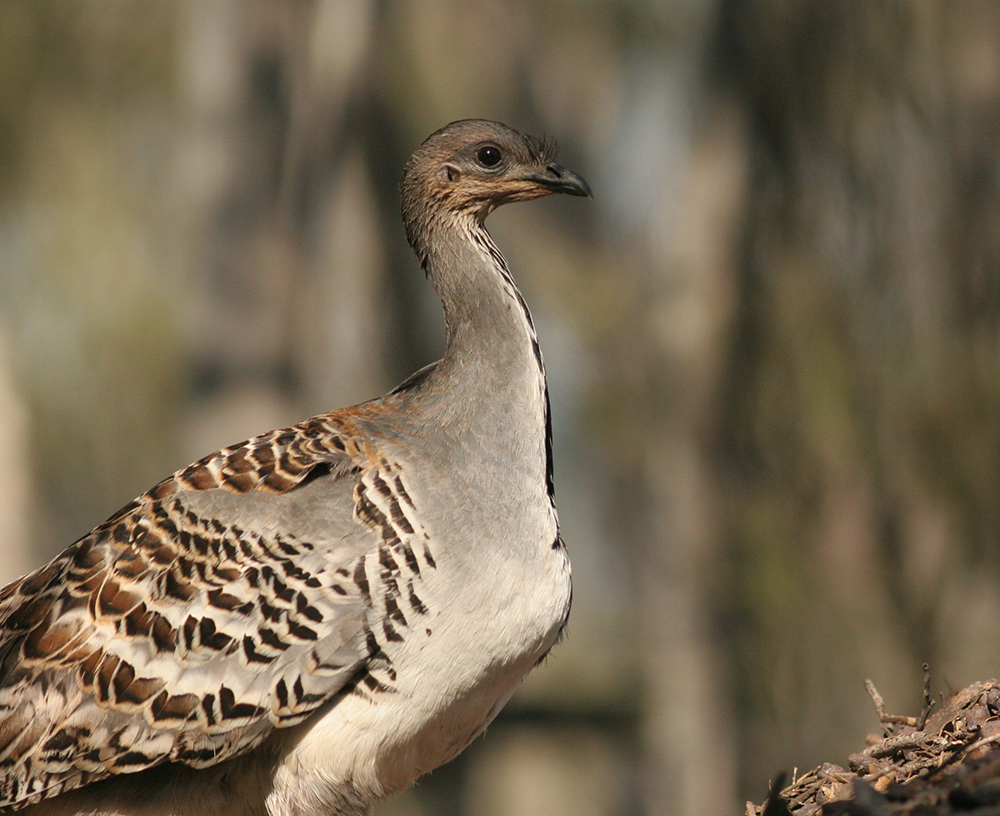
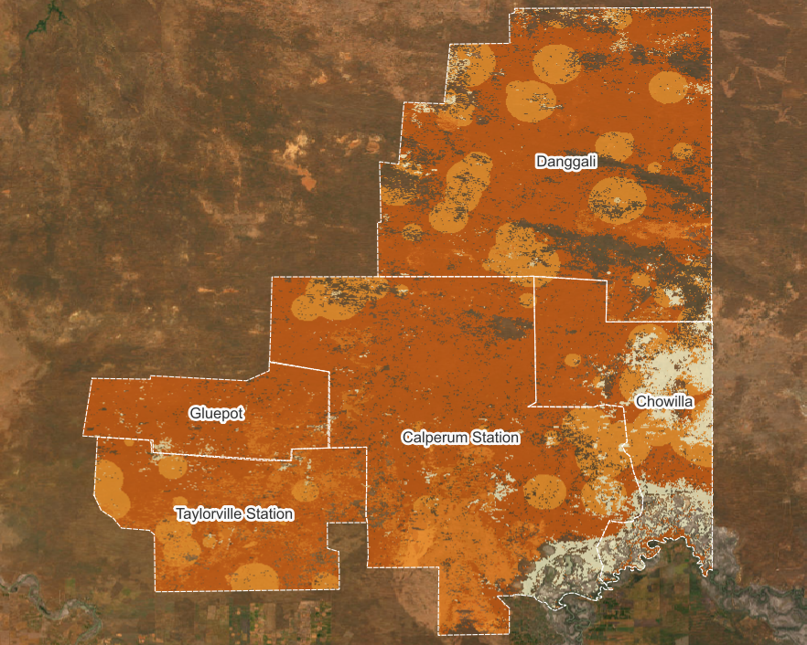

These interactive maps show habitat suitability for the mallee bird community, linking expert-elicited State-and-Transition Models of vegetation condition to species- and community-level suitability scores.
Suitability is shown on a 0–7 Likert scale, where 0 indicates that a species is not expected to occur and 7 indicates the best available habitat expected.

Darker colours indicate higher predicted habitat suitability. Use the map layer control to switch between species groups and community-level outputs.
Use the map layer control to turn map layers on and off. Satellite imagery is provided as an online basemap and may take a moment to load.
These maps are intended as decision-support outputs and should be interpreted alongside local ecological knowledge, field validation, and the assumptions of the underlying State-and-Transition Models.